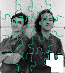
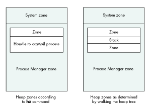

See if you can solve this programming puzzle, presented in the form of a dialog
between Konstantin Othmer (KON) and Bruce Leak (BAL). The dialog gives clues to
help you. Keep guessing until you're done; your score is the number to the left of the
clue that gave you the correct answer. Even if you never run into the particular
problems being solved here, you'll learn some valuable debugging techniques that will
help you solve your own programming conundrums. And you'll also learn interesting
Macintosh trivia.
BAL I've got a small problem I'd like you to help me with.
KON Who's paying the airfare this time?
BAL Nothing like that. It's really quite straightforward, and surprisingly
reproducible. The problem is that sometimes when I'm using Microsoft Word 5.1a and
I pull down a menu, when I let go of the menu there's garbage on the screen where the
menu was.
KON That was a problem they were having in the beta release, but I think it's fixed
in the final version of Windows 95.
BAL Actually, this is on a Power Macintosh 6100, and I haven't yet installed
Windows 95 on top of my SoftPC, which runs on my 68000, which is being emulated
by Gary's emulator.
KON Microsoft is still in the loop.
BAL Well, it's not just a Microsoft problem. I can't seem to make it happen with
Word by itself. It only seems to happen if I run and quit cc:Mail before running Word.
KON That darn Justice Department! Without them you could just be running
Microsoft mail, and you probably wouldn't have this problem.
Try running Word; then launch and quit cc:Mail. Does it still happen?
BAL Now Word is working fine. In fact, Word works in every case -- at least as far
as this problem is concerned -- unless I launch and quit cc:Mail before launching and
quitting Word. And the interesting thing is that it only happens with the Modern
Memory Manager on.
KON Just run your machine with the classic Memory Manager. I have problems
running THINK C's debugger when I use the Thread Manager and the Modern Memory
Manager. There's just too many of these kinds of bugs to deal with!
BAL Not so fast, QuickDraw. The Modern Memory Manager gives you lots of great
new features. First of all, your machine will run faster. In addition to being ported
native, it also uses much more efficient algorithms. It keeps track of free blocks in a
separate list, keeps track of heap zones to make RecoverHandle work better, and has a
back pointer so that blocks can be walked either way, drastically decreasing
heap-walking time and making things much more efficient -- especially when virtual
memory is on. Also, the Modern Memory Manager was designed to be bus error proof,
in that it returns from any internally generated exception by returning an error to its
caller (though this was changed in the latest version of the Modern Memory Manager,
as you may have read in the Balance of Power column in develop Issue 23). Finally, in
the old Memory Manager moving the partition between the system and Process
Manager heaps was a total nightmare; this problem was solved in the Modern Memory
Manager.
KON Anytime you port something native you have two choices: rewrite the code
directly, preserving internal algorithms and data structures, or rethink and
reimplement, preserving only the top-level application interface. The first choice
virtually guarantees compatibility but makes it difficult to maintain in the future,
while the second gives you slightly less compatibility but a much better upgrade path,
better maintainability, and a much more efficient system. It sounds like they went
with the second choice, but at the obvious expense of some short-term compatibility
problems. And it seems like that's what we're dealing with here.
BAL Thanks for the philosophy lesson. Are you going to solve the problem?
KON OK. Launch and quit cc:Mail and check all the heaps. Look for orphaned
memory, locked blocks being left around, or any other signs of an application not
properly cleaning up after itself.
BAL I need to install MacsBug to do that. I'll install version 6.5d11 because it has
some new PowerPC features in case we need them.
KON I'm afraid we will.
BAL So after we quit cc:Mail, the system heap grew some, but all the heaps seem
fine. We have an extra 128-byte pointer, and we have five extra handles for a total of
almost 32K, but three of those (25K) are purgeable.
KON All this extra stuff lying around certainly explains why I have to reboot every
couple of hours.
BAL Yeah, and those OS engineers really worked on that problem. On System 7.5
you get a pretty picture and a nice thermometer bar!
KON So try the patch dcmd. It will tell you what traps have been patched. Before you
run cc:Mail, type
patch s
to grab a snapshot of all the traps. When you're in cc:Mail, just type
patch
and you'll get a list of all the traps that have been patched. It's a great way to find
random skankiness.
BAL The only OS trap that they patch is _Rename, and they patch the Toolbox traps
_Pack8, _UserDelay, _SysErr, _LoadSeg, _UnloadSeg, and _ExitToShell.
KON OK, and what's still patched after the application quits?
BAL Nothing. It seems to totally clean up.
KON Wonderful. What does Word patch?
BAL The OS traps _Rename and _CompactMem, and the Toolbox traps _Pack8,
_UserDelay, _HiliteWindow, _FrontWindow, _SysError, _LoadSeg, and _ExitToShell.
KON There seems to be a lot of overlap. We should check a do-nothing generic
application. I bet the system is magically patching some stuff when it runs an
application.
BAL It turns out that all those traps except _HiliteWindow, _FrontWindow,
_CompactMem, and _UnloadSeg are always getting patched.
KON It figures. Word is augmenting parts of the Memory Manager and getting in on
some Window Manager action, and cc:Mail is playing games with the Segment Loader.
Where's that book on Macintosh programming guidelines?
BAL I don't think they read that in Redmond. By the way, even though menu code is
fairly boilerplate, this one's a mixed bag. Netscape, SimpleText, and FindFile work
fine, but Word and THINK Reference fail consistently.
KON Boy, times have changed. I remember when you used to just dive right into
MacsBug, disassemble a bunch of code, and get to the bottom of these problems. Now
you're looking at what SimpleText does compared to Word!
BAL I'm not the one who's doing it. I don't even touch the computer anymore. It's one
of my henchmen, Paul Young.
KON Anyway, there are two ways the bits behind the menus get redrawn. If plenty
of memory is available, they get back-buffered and restored with CopyBits. If there's
not much memory, an update event is generated.
BAL Since Word is the only application running at the time, we have plenty of
memory.
KON Set a breakpoint on CopyBits and pull a menu down. The first break will be
when the bits are being saved. Let's look at the address, step over the call, and make
sure the right data was put there. When you let the menu up, you'll break on CopyBits
again. Is the source data correct -- that is, is the source our previous destination?
BAL The base address when the bits are restored isn't the same as the base address
when they get saved.
KON Where is the base address? Is it part of a handle that moved?
BAL The base address for the restore is $40810000.
KON Someone is dereferencing zero! It sounds like the bits are getting saved in a
handle, and somehow the handle is getting trashed. Let's follow the handle from the save
and see what happens to it.
BAL When the bits are being saved, the base address is part of a handle in
MultiFinder temporary memory. The handle is $438 bytes long.
KON What happens to that memory on the restore?
BAL The memory still exists, and the data is fine. It's just that the PixMap doesn't
point there anymore.
KON So we need to figure out where the Menu Manager is storing the PixMap and
why that location is getting trashed.
BAL The Menu Manager uses SaveBits and RestoreBits, which allocate memory for
the pixels using the offscreen buffer calls that return PixMaps. The PixMap base
address does double duty: when it's unlocked it's a handle; when it's locked it's a
pointer. There's a flag in rowBytes to indicate what state it's in. To go from the locked
state to the unlocked state, the GWorld routines call RecoverHandle.
KON Let's break on RecoverHandle and see what we get back.
BAL It returns 0. But why?
KON It's kind of weird that this happens only with the Modern Memory Manager. In
the old Memory Manager, you had to set the heap zone before calling RecoverHandle.
The Modern Memory Manager relaxed this restriction and keeps a tree of valid heaps.
When you call RecoverHandle, it walks the heap tree. If cc:Mail is somehow corrupting
the tree, RecoverHandle will fail.
BAL Nice theory. How are you going to test that?
KON E.T.O. 17 has a debugging version of the native Memory Manager that will
print out diagnostics anytime weird stuff happens. Let's install it and reboot.
BAL When you boot, you drop into MacsBug with the message "Bad pointer being
passed to RecoverHandle 00030020." It looks like "PC Exchange" was loading.
KON Let's try booting with the extensions off. Use the Extensions Manager so that
you can keep MacsBug, the Memory control panel (so that we're sure we're in the
Modern Memory Manager), and the Debugging Memory Manager.
BAL When I run the Extensions Manager, I break into MacsBug with the message
"Bad handle; are you unlocking a fake handle?"
KON A complete treatise on all the memory crimes committed in the Macintosh is
beyond the scope of this column.
BAL Without superfluous extensions, the problem at boot time goes away, but we
still have the problem in Word.
KON Well, let's look at the zones and see if everything looks OK. Let's do an hz to list
all the heap zones.
BAL OK. But hz doesn't use the heap tree, so if you want to check the heap tree you'll
have to do it manually.
KON Great. I'll use the SmartFriends debugging trick and call Jeff to figure out how
to do that.
Jeff The heap tree is part of the zone header. The system zone starts at $2800, and
a pointer to the next zone starts at offset $20. $2820 contains $1672DF0.
KON That should be the Process Manager zone. But that number is really big. How
could that be? How many fonts do you have installed?!
Jeff Since the system heap can grow, we put the Process Manager zone header at the
end of the block, so we don't have to move the header every time the heap size changes.
BAL The next zone in the Process Manager is nil, since at the top level there are
only two zones: the system zone and the Process Manager zone.
KON Let's look at the child zones inside the Process Manager.
Jeff The child zones are pointed to by offset $24 in the zone header.
BAL The first child zone is the Word zone, which corresponds to what we got from
hz. And the Word zone header has no child zones.
KON So the world makes sense so far. Does the next zone pointer make sense?
BAL It's kind of wacky. It points inside the Word heap!
KON That's a problem. Does that zone header look reasonable, at least?
BAL No. It's trash. It looks like Word code.
KON What happens if you don't run cc:Mail before running Word? And how does the
Memory Manager know how to update the zone headers? There's no call to explicitly
destroy zones, only create them.
BAL I'll take the second question first. Zones are created by InitZone, and they're
never explicitly destroyed. In the Modern Memory Manager, there's new logic in
DisposeHandle that checks to see if the handle is a zone; if so, it assumes the zone is
destroyed and updates the heap tree.
KON Will the skankiness ever end?
BAL If I run Word without first running cc:Mail, the heap tree is OK.
KON Now we just need to figure out why the heap tree is getting trashed. Even
though the tree update algorithm is implicit, it seems pretty good at first blush. Let's
go through the failing scenario and compare the heap zones to the tree and figure out
when they diverge.
BAL When we run cc:Mail, hz doesn't agree with the zone structure we get by
walking the heap tree. Here's what the two structures look like:

KON So the cc:Mail zone is smaller than the handle of the memory it's in. Someone
limited the size of the application zone. In the heap tree view, it's clear why: another
zone is being allocated; 32K is left between the zones, and that space is being used for
the stack.
BAL The reason hz can't find the second zone is that before the Modern Memory
Manager, no one kept explicit track of the zones. Basically, the hz command has to
search for the zones. It does this by starting from the system zone, which is always
pointed to by low memory (and is usually located after the trap tables at $2800).
From the system heap zone header, it can find the zone trailer. Right after that block is
the Process Manager zone header. It walks all the blocks in a zone and finds all the
handles that look like other zones. It starts by assuming that the handle contains a
zone, and then checks to see if the zone header points to a block that looks like a trailer
and if the trailer points back to the zone header. When it looks for zones inside other
zones, it assumes that they begin either at the start of the handle or right after another
zone. Since cc:Mail has its stack space between the two zones, the hz command can't
find it.
KON OK. Unfortunately we're not debugging the hz command. But that probably gives
us a clue as to why the Modern Memory Manager is getting confused. It seems to keep
pretty good track of the zones that are getting created, since that's easy by just
watching InitZone. But it gets confused when the zones are being disposed of, since it
does that by watching DisposeHandle.
BAL Exactly. The heap tree gets trashed when cc:Mail quits, since the Modern
Memory Manager assumes that there's only one zone (and perhaps its children) in any
handle. So when it sees the dispose, it throws away the first zone and all its children,
but it doesn't throw away the second zone. It works fine with the old Memory Manager
since no one ever explicitly keeps track of all the zones. But the Modern Memory
Manager uses the heap tree for RecoverHandle, and the tree is trashed, so either the
machine crashes or you get garbage.
KON That's pretty interesting. In this case, neither cc:Mail nor Word did anything
wrong. The way cc:Mail used the Memory Manager was nonstandard, and when the
algorithms in the Modern Memory Manager changed, there were some interesting cases
that fell through the cracks. I think the newer version of cc:Mail no longer allocates
zones this way. And the Memory Manager will undoubtedly soon be smarter.
BAL Nasty.
KON Yeah.
KONSTANTIN OTHMER AND BRUCE LEAK
KON has been holding a steady job at Catapult Entertainment for many months now, but
he spends more time playing soccer than working. BAL is at the front of the
self-employment line and has finally moved out of his hotel and into a house. Rumor
has it that behind the house there's a big archery field.